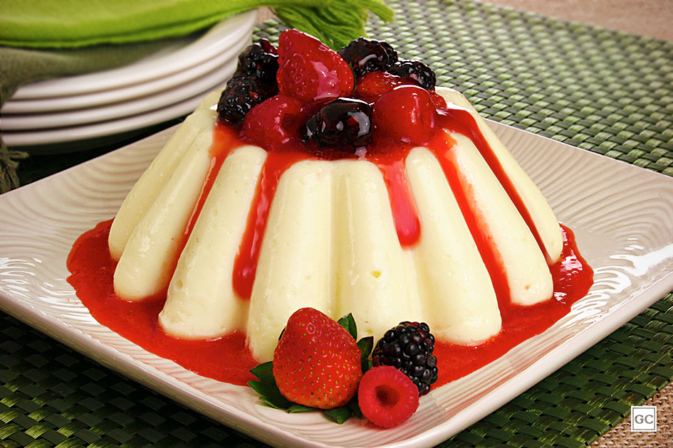
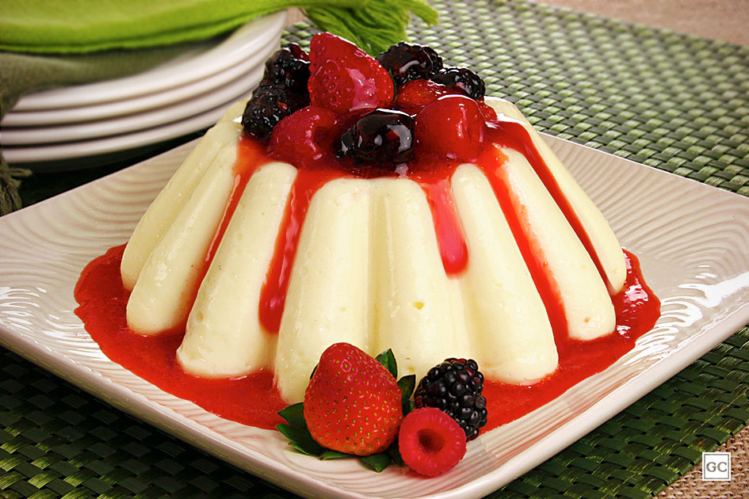

Pudim
O pudim é uma sobremesa popular em muitos países, mas no Brasil, ele é especialmente querido. É um tipo de flan ou caramel custard, conhecido por sua textura cremosa e sabor doce.
A textura do pudim é a chave para sua popularidade. É denso e cremoso, quase como um creme que derrete na boca. A textura deve ser uniforme e suave, sem grânulos ou buracos. O sabor do pudim é doce e rico, com um leve toque de baunilha. O caramelo no topo adiciona um contraste de sabor, oferecendo um toque de amargor que equilibra o doce da base.
 
